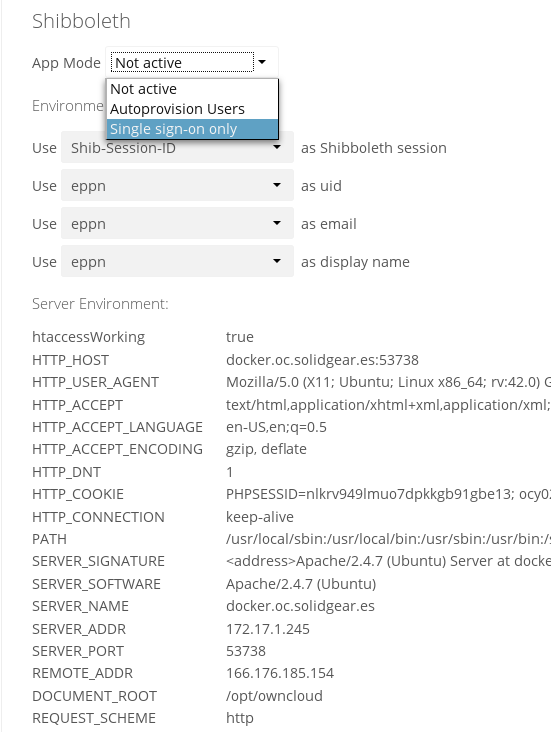
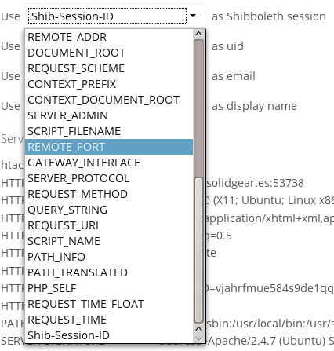

Shibboleth Integration¶
Introduction¶
The ownCloud Shibboleth user backend application integrates ownCloud with a Shibboleth Service Provider (SP) and allows operations in federated and single-sign-on (SSO) infrastructures. Setting up Shibboleth has two big steps:
- Enable and configure the Apache Shibboleth module.
- Enable and configure the ownCloud Shibboleth app.
The Apache Shibboleth module¶
Currently supported installations are based on the native Apache integration. The individual configuration of the service provider is highly dependent on the operating system, as well as on the integration with the Identity Providers (IdP), and require case-by-case analysis and installation.
A good starting point for the service provider installation can be found in the official Shibboleth Wiki.
A successful installation and configuration will populate Apache environment variables with at least a unique user id which is then used by the ownCloud Shibboleth app to login a user.
Apache Configuration¶
This is an example configuration as installed and operated on a Linux server running the Apache 2.4 Web server. These configurations are highly operating system specific and require a high degree of customization.
The ownCloud instance itself is installed in /var/www/owncloud/.
Further Shibboleth specific configuration as defined in /etc/apache2/conf.d/shib.conf.
# Load the Shibboleth module.
LoadModule mod_shib /usr/lib64/shibboleth/mod_shib_24.so
# Ensure handler will be accessible
<Location /Shibboleth.sso>
AuthType None
Require all granted
</Location>
# always fill env with shib variable for logout url
<Location />
AuthType shibboleth
ShibRequestSetting requireSession false
Require shibboleth
</Location>
# authenticate only on the login page
<Location ~ "^(/index.php)?/login">
# force internal users to use the IdP
<If "-R '192.168.1.0/24'">
AuthType shibboleth
ShibRequestSetting requireSession true
require valid-user
</If>
# allow basic auth for eg. guest accounts
<Else>
AuthType shibboleth
ShibRequestSetting requireSession false
require shibboleth
</Else>
</Location>
# shib session for css, js and woff not needed
<Location ~ "/.*\.(css|js|woff)">
AuthType None
Require all granted
</Location>
To allow users to login via the IdP, add a login alternative with the login.alternatives
option in config.php.
Depending on the ownCloud Shibboleth app mode, you may need to revisit this configuration.
The ownCloud Shibboleth App¶
After enabling the Shibboleth app on your Apps page, you need to choose the app mode and map the necessary Shibboleth environment variables to ownCloud user attributes on your Admin page.

figure 1: Enabling Shibboleth on the ownCloud Admin page
Choosing the App Mode¶
After enabling the app it will be in Not active mode, which ignores a
Shibboleth session and allows you to login as an administrator and inspect the
currently available Apache environment variables. Use this mode to set up the
environment mapping for the other modes, and in case you locked yourself out of
the system. You can also change the app mode and environment mappings by using
the occ command, like this example on Ubuntu Linux:
$ sudo -u www-data php occ shibboleth:mode notactive
$ sudo -u www-data php occ shibboleth:mapping --uid login
In Single sign-on only mode the app checks if the environment variable for
the Shibboleth session, by default Shib-Session-Id, is set. If that is the
case it will take the value of the environment variable as the uid, by
default eppn, and check if a user is known by that uid. In effect, this
allows another user backend, e.g., the LDAP app, to provide the displayname,
email and avatar.
Note
As an example the IdP can send the userPrincipalName which the Apache Shibboleth module writes to a custom Apache environment variable called
login. The ownCloud Shibboleth app reads thatloginenvironment variable and tries to find an LDAP user with thatusername. For this to work userPrincipalName needs to be added to the Additional Search Attributes in the LDAP directory settings on the advanced tab. We recommend using a scoped login attribute like userPrincipalName or mail because otherwise the search might find multiple users and prevent login.Note
In many scenarios Shibboleth is not intended to hide the user’s password from the service provider, but only to implement SSO. If that is the case it is sufficient to protect the ownCloud base url with Shibboleth. This will send Web users to the IdP but allow desktop and mobile clients to continue using username and password, preventing popups due to an expired Shibboleth session lifetime.
In Autoprovision Users mode the app will not ask another user backend, but instead provision users on the fly by reading the two additional environment variables for display name and email address.

figure 2: Mapping Shibboleth environment configuration variables to ownCloud user attributes
In ownCloud 8.1 the Shibboleth environment variable mapping was stored in
apps/user_shibboleth/config.php. This file was overwritten on upgrades,
preventing a seamless upgrade procedure. In ownCloud 8.2+ the variables are
stored in the ownCloud database, making Shibboleth automatically upgradeable.
Mapping ownCloud User IDs¶
From 3.1.2 you can now specify a mapper that is used on inbound ownCloud user IDs,
to adjust them before usage in ownCloud. You can set the mapper using occ:
$ sudo -u www-data php occ config:app:set user_shibboleth uid_mapper --value="OCA\User_Shibboleth\Mapper\ADFSMapper"
You may view the currently configured mapper using:
$ sudo -u www-data php occ shibboleth:mapping
The following mappers are provided with the app:
- OCA\User_Shibboleth\Mapper\NoOpMapper - the default, does not alter the uid
- OCA\User_Shibboleth\Mapper\ADFSMapper - splits the uid around a ; character and takes the first piece
- OCA\User_Shibboleth\Mapper\GUIDInMemoryMapper - maps in binary GUIDs to strings
Shibboleth with Desktop and Mobile Clients¶
The ownCloud Desktop Client can interact with an ownCloud instance running inside a Shibboleth Service Provider by using OAuth2 tokens to authenticate.
The ownCloud Android and iOS mobile apps also work with OAuth2 tokens.
WebDAV Support¶
Users of standard WebDAV clients can generated an App Password on the
Personal settings page. Use of App Passwords may be enforced with the
token_auth_enforced option in config.php.
Known Limitations¶
Encryption¶
File encryption can only be used together with Shibboleth when the master key-based encryption is used because the per- user encryption requires the user’s password to unlock the private encryption key. Due to the nature of Shibboleth the user’s password is not known to the service provider.
Other Login Mechanisms¶
You can allow other login mechanisms (e.g. LDAP or ownCloud native) by creating a second Apache virtual host configuration. This second location is not protected by Shibboleth, and you can use your other ownCloud login mechanisms.
Session Timeout¶
Session timeout on Shibboleth is controlled by the IdP. It is not possible to have a session length longer than the length controlled by the IdP. In extreme cases this could result in re-login on mobile clients and desktop clients every hour.
UID Considerations and Windows Network Drive compatability¶
To log in LDAP users via SAML for Single Sign On the user in LDAP must be uniquely resolvable by searching for the username that was sent in the SAML token. For this to work the ldap attribute containing the username needs to be added to the Additional Search Attributes in the LDAP directory settings on the advanced tab. We recommend using a scoped login attribute like userPrincipalName or mail because otherwise the search might find multiple users and prevent login.
user_shibboleth will do the authentication, and user_ldap will provide
user details such as email and displayname.